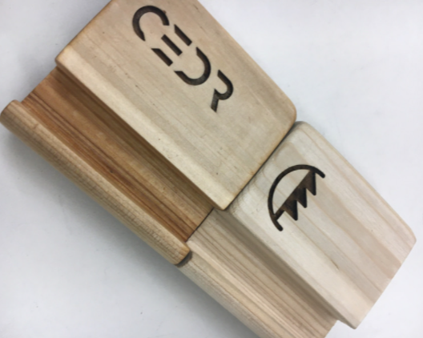
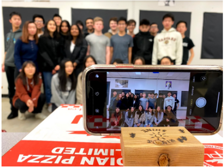
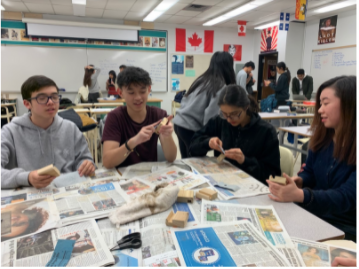

Junior Achievement Company Program
Cedr Co. Phone Stands was a stdent-run company working in the Calgary area. The goal for the company was to create a phone stand that was aesthetically pleasing and minimalistic, while also being universal to all smartphones. As a part of this 6-month program, I had the role of Vice President of Finance and Production.
To design the phone stand, I had the chance to use Autodesk Inventor to create the model for the phone stand, while also gaining hands-on experience with band saws, miter tables, and sanding machines to manufacture our phone stands.
Having the role as VP of Finance in the company, I also used Microsoft Excel to manage and budget company funds, utilizing spreadsheets to track purchases, organize production costs, and to direct capital allocation.
Check out our shareholder's report here
 